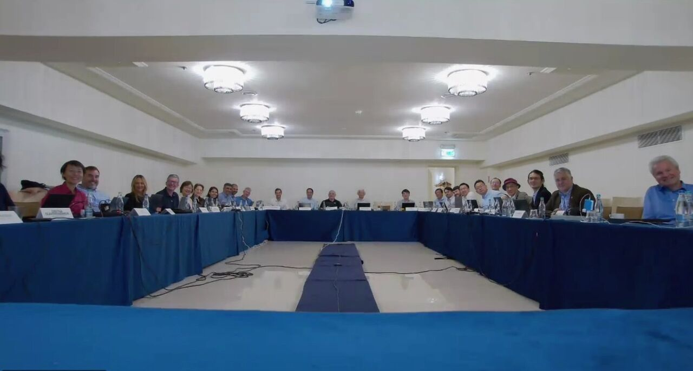
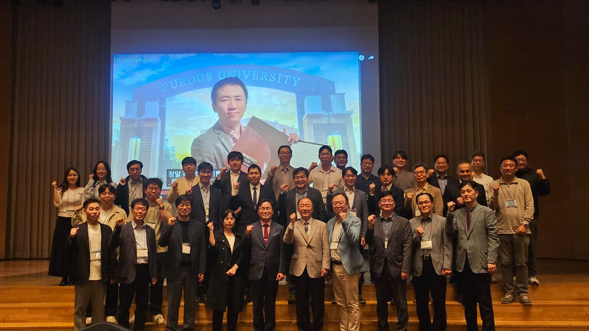
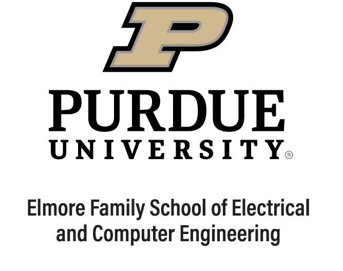
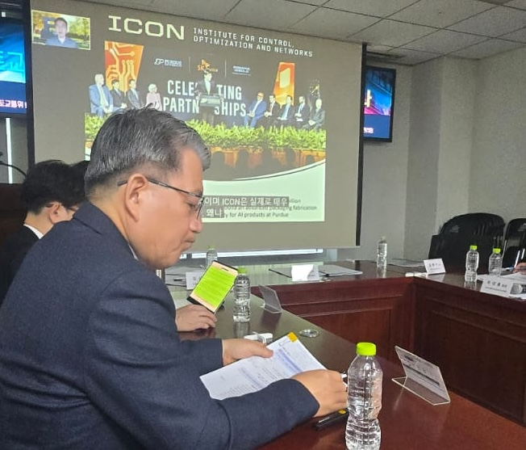
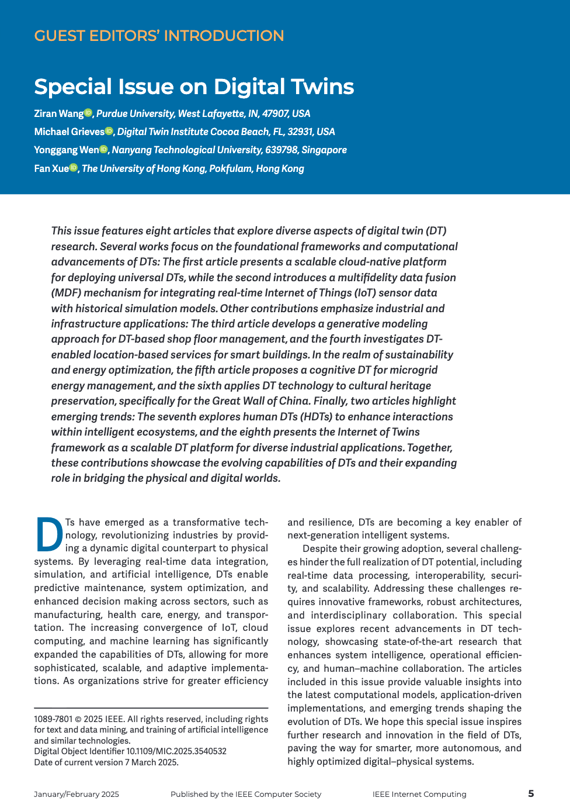
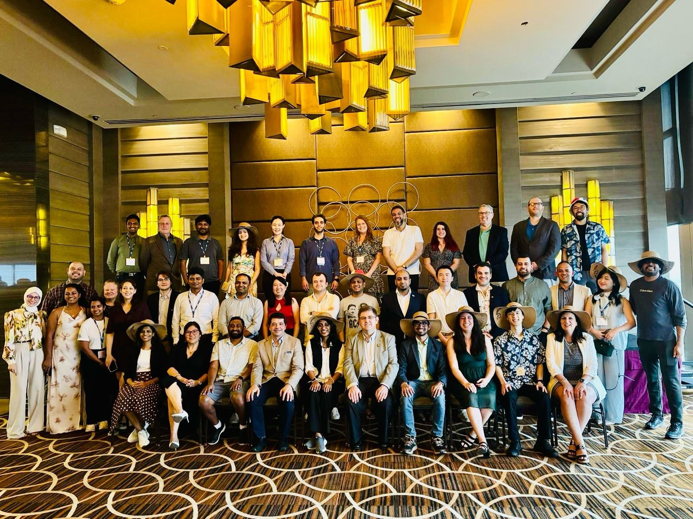
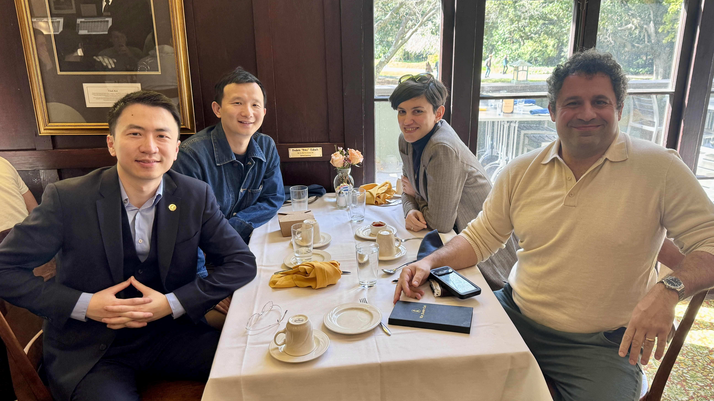
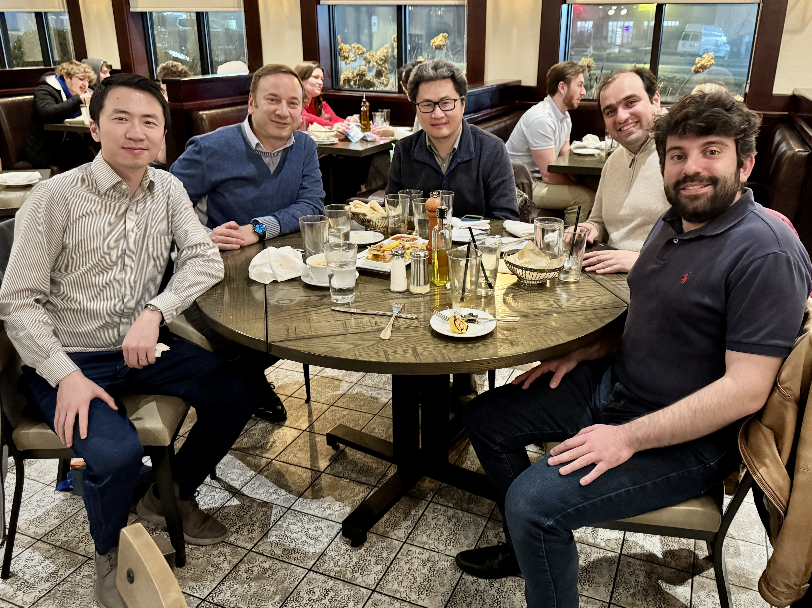

2025

Jun. 22, 2025
We presented "Video Token Sparsification for Efficient Multimodal LLMs in Driving Visual Question Answering" at the 2025 IEEE Intelligent Vehicles Symposium (IV), Cluj Napoca, Romania.
Jun. 21, 2025
I attended the IEEE ITS Society's Board of Governor and Technical Committee Chair meeting, Cluj Napoca, Romania.
May 15, 2025
I represented Purdue University to sign a letter of intent with Korea Auto-Vehicle Safety Association (KASA), Seoul, South Korea.
May 1, 2025
I obtained a courtesy appointment as Assistant Professor in the Elmore Family School of Electrical and Computer Engineering at Purdue University.
Apr. 24, 2025
We presented "STAMP: Scalable Task- And Model-agnostic Collaborative Perception" at the 2025 International Conference on Learning Representations (ICLR), Singapore.
Apr. 10, 2025
I was invited to represent Purdue University to deliver a speech at the National Assembly Seminar of the Ministry of Land, Infrastructure and Transport of the government of South Korea.
Mar. 17, 2025
I served as the lead guest editor for a "Special Issue on Digital Twins" in IEEE Internet Computing.
Mar. 14, 2025
I represented the IEEE Intelligent Transportation Systems (ITS) Society to attend the 2025 IEEE Annual SAC/YP/WiE/LM F2F Committee Meeting, Panama City, Panama.
Feb. 18, 2025
I was invited to visit University of California, Berkeley and delivered a talk "LLM4AD: Large language models for autonomous driving," Berkeley, CA.
Jan. 31, 2025
I was invited to visit University of Illinois Urbana-Champaign and delivered a talk "LLM4AD: Large language models for autonomous driving," Champaign, IL.